Due: Thursday, January 20, 2000.
In what follows, (P) refers to the standard form linear programming problem
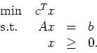
Here,
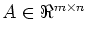,
the dimensions of x, c, and b
are defined appropriately, and 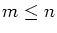.
Let K be the feasible region of (P).
- 1.
- Let 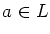,
where L is an affine space in 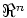.
Let
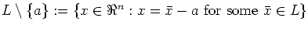.
- (a)
- Let x and y be two points in
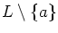.
Show that any linear combination of x and y is also
in
.
What do you conclude about
?
- (b)
- Let b be another point in L.
Let x be a point in
.
Show that x is also in
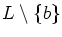.
How are
and
related?
- 2.
- Let the system Ax=b be defined by:
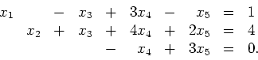
Let
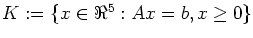.
The point
x=(1,4,0,0,0)T is a basic feasible solution for this
problem. Find all the bases corresponding to this bfs.
- 3.
- (a)
- Construct a linear programming problem of the form (P)
with dim(K)>n-m.
- (b)
- Construct a feasible
linear programming problem of the form (P)
with dim(K)<n-m, 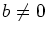,
and rank(A)=m.
- (c)
- In part (b),
the linear program you defined has
a degenerate basic feasible solution.
What are the bases associated with that bfs?
- 4.
- Construct a dual pair of linear programming problems where both
problems are infeasible.
John E Mitchell
2000-01-13